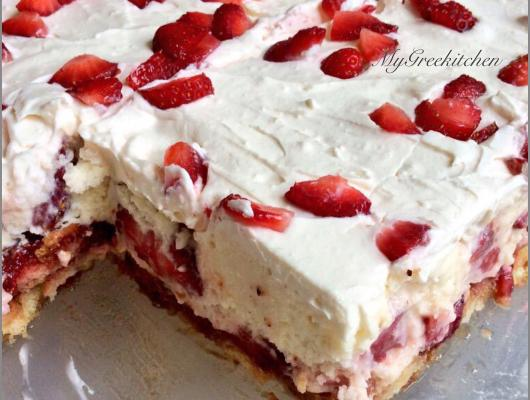

No Bake Strawberry Shortcake

Description
No Bake Strawberry Shortcake
Ingredients
- 1 box of vanilla instant pudding
- 1/2 cup strawberry juice
- 1 1/2 cups nonfat milk
- 1 tsp vanilla extract
- 24 Savoiardi. Lady Fingers
- 220 g (about 1 cup) Whipped cream, chilled
- 1 pound fresh strawberries, hulled and sliced and patted dry
Steps
- In a bowl Whisk pudding, milk and vanilla and set aside
- With a hand mixer or in the bowl of a stand mixer, whip the cream until it just holds, stiff peaks. ( Add sugar if desired).
- Dip ladyfingers briefly in strawberry juice and arrange them in the bottom of a dish.
- Spread half the pudding mixture over the ladyfingers.
- Place the strawberries in a single layer over the pudding.
- Repeat with remaining ladyfingers, pudding mixture and strawberries.
- Top with whipped cream and strawberries.
- Chill for at least 4 hours before serving.
content from No Bake Strawberry Shortcake/
via Foodista.com – The Cooking Encyclopedia Everyone Can Edit/
CC BY 3.0